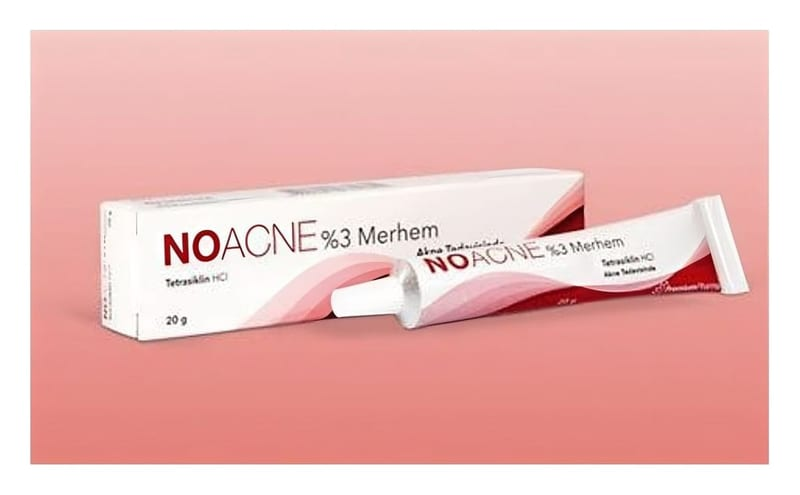

Noacne %3 Merhem

Ne için kullanılır
KT · Bölüm 1NOACNE, somon renginde, homojen bir merhemdir.
NOACNE deri üzerine uygulanan antibiyotikler sınıfına ait tıbbi bir üründür.
NOACNE, tetrasiklin hidroklorür adlı etkin madde içermektedir. Bu madde bakterileri öldürür.
Her kutuda bir adet 20 g’lık alüminyum tüpte kullanıma sunulmaktadır.
NOACNE, iltihaplı (yangılı) formları başta olmak üzere, yüzeysel akne tedavisinde kullanılır.